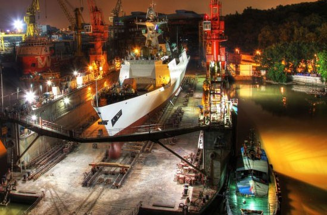

2014-07-28 23:18:00
中共海军的第20艘054A级护卫舰黄冈号三天前在黄埔造船厰下水，这将是最后一艘054A+（自第5艘054A起，舰艏隐身处理有所不同，一般称其为054A+）。目前船台里还有2艘类似的护卫舰，但是它们的船尾加装了半年前首见于056级的VDS（Variable Depth Sonar，变深声纳，这种主动式的声纳是当今世界的尖端技术），反潜能力因此大为加强，近防系统也由730升级到1130十一管链炮，所以一般把它们称为054A++级。
黄冈号在浮动船坞中准备下水
054A级是中共海军现代化之后，第一型批量生產的主要舰艇，也是中共歷史上第一批和世界先进水平十分接近的自建军舰。其排水量超过4000吨，比1970年代开建的旅大级驱逐舰还要大，是十五年前先进护卫舰的主流。054A装备有俄制的AESA雷达和32发垂直发射的HHQ16防空导弹，防空能力在当今的护卫舰里也算是一流的。反潜侦测则依靠TAS（Towed Array Sonar，拖曳阵列声纳，这种被动式的声纳是20年前的尖端技术），目前已稍为落后，因此054A++增加了VDS。054A载有一架直升机，并备有机库，在远航时仍有保障能力。最重要的是054A的C4ISR（Command，Control，Communications，Computers，Intelligence，Surveillance，Reconnaissance）系统也到达了十五前世界先进水平，是共军第一型具有实时综合全舰队敌情资讯能力的舰只。总体来说，054A比国军的康定级先进了一代，比没有隐身设计的成功级先进了两代。自2006年起，054A开始替换旧型的053系列，对中共海军的现代化变革，有极大的贡献。
然而新技术的发展是永无止境的，经过八年的变化，054A的缺陷也随着时间而越加明显，其中最重要的就是其反潜能力的不足，也就是054A的原始设计就太过强调通用性。八年前作为共军的第一款现代化军舰，通用性是个好处，但是共军的进步太快了，现在防空的责任已经有052C，052D和全新的055级驱逐舰担任，近岸防御则有便宜得多的056级轻型护卫舰负责，护卫舰因而应该专司远洋舰队的反潜任务，而这几年世界新出现的最先进护卫舰，如德国的F125级和英国的Type 26，其设计已经为反潜任务大幅专业化。054A与它们相比，已经落后了一代；其差别主要在三方面：首先，最先进的护卫舰必须有两架反潜直升机，使反潜巡逻能力加倍；其次，必须改用半电（CODLAG，COmbined Diesel-eLectric And Gas）或全电（CODLOG，COmbined Diesel-eLectric Or Gas）推进以减小引擎噪音，增强声纳探测能力；最后，排水量难免必须增加以容纳眾多新设备，如F125重7000吨，Type 26则重6000吨。
综合各方面的小道消息，054A的生產已经接近尾声，最后四艘054A++型可能代表了中共这一代护卫舰的絶唱。其后续型号应该为5000吨级，使用全电推进，并配有两架反潜直升机。去年中共宣布研制成功单轴20MW的船用电力系统，所以新护卫舰上马已经没有大的阻碍，预计明年底或后年初开建，届时共军的护卫舰技术将与世界领先的英德同步（美国海军目前主要由核潜艇和航母上的直升机执行反潜任务，对是否需要专业反潜舰只还没有共识）。其型号还有些争议：有些人猜测为057，有些人则称之为054B。依中共海军的惯例，是否使用全新的型号视其舰身决定：如果舰身是全新的，应会叫做057，否则将沿用054B。我个人认为前者的可能性稍大些。